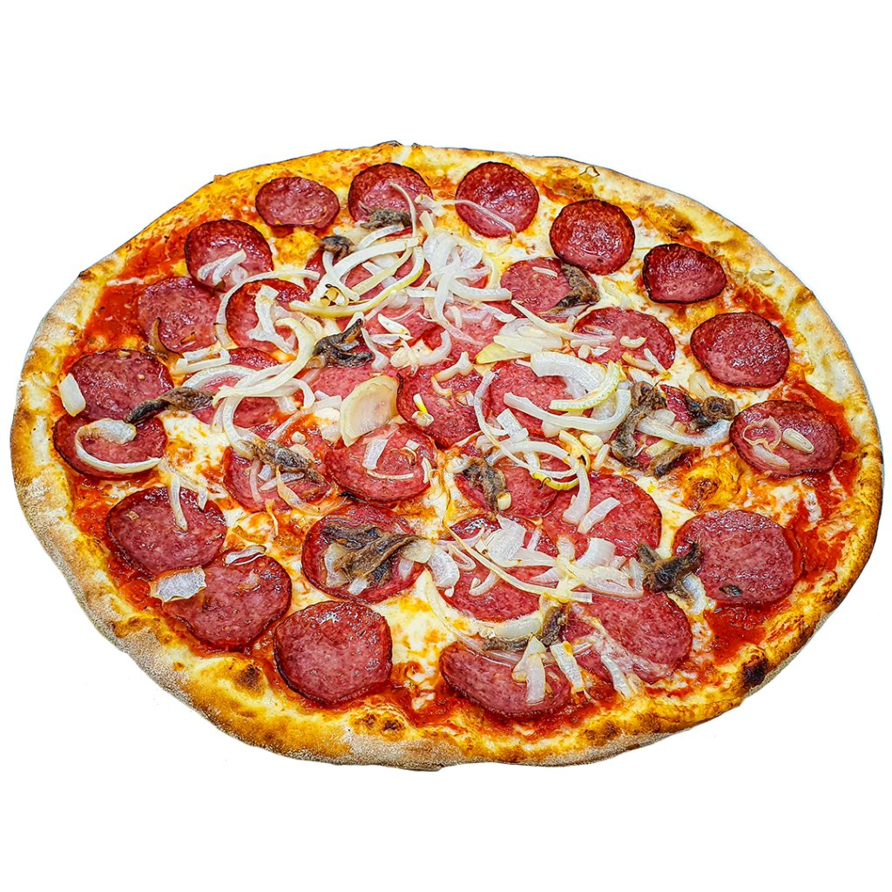

Pizza diavola

Description
Devil-style sauce, as it's known in Italian, is named for its spicy notes.
Here, that means a pizza with plenty of hot salami and pickled jalapeños. They make an addictively good combo.
Ingredients
- tomato sauce
- olive oil
- sliced hot salami
- sjalapenos
- mozzarella
- pizza dough
Steps
- Preheat oven to 230°C or highest setting and preheat a pizza stone. Portion dough into six on a lightly floured surface.
Working with one piece at a time, place lightly floured hands around the dough and pull it towards you along the bench so the leading edge pulls under.
Rotate, tucking edges under, and repeat to form a smooth ball – the aim is to create tension in the dough. Repeat with remaining dough, transfer to a greased tray, cover loosely with greased plastic wrap and rest at room temperature until doubled in size (1½-2 hours).
- In batches, invert dough onto a floured surface. Heavily flour the top, then flatten to a 30cm round, pushing outwards from the centre using your fingers, without pressing on the edge so you get a good crust. If you have a pizza slide, assemble on a well-floured bench;
if you don't, transfer bases to a floured pizza tray with holes to assemble. Brush 2cm around the edge with olive oil for a crisp crust. Spread tomato mixture to reach edge of crust, place salami slices on top, touching but not overlapping, then jalapeños, then scatter with cheese.
Transfer to pizza stone with a pizza slide or transfer tray onto stone in oven and bake until puffed and golden brown (10 minutes). Season to taste with salt and olive oil and serve.